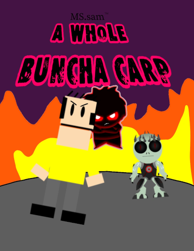

MS.sam: A Whole Buncha Carp Poster
Finished .
Public domain license

Click the preview above to get a better quality version.
This is a poster for a game that I'll never make, EVER. For a joke? Maybe. For real? Nope. Don't expect it.
Apparently, "A Whole Buncha Carp" is meant to be an RPG based on the hit, obscure,
unknown and Emmy award-winning show MS.Sam, and—this is straight from the
actual page I wrote for this at the time—"like all RPGs, you fight people and
enemies". Which is… obvious… but it's not like I would've added real game
mechanics at the ripe age of eleven, so it's not that big of a deal.
There were four realms to be in the game: the "Normie" realm, the "Realm of Doom",
the "Water" realm, and "The End". Apparently there's some sleep paralysis demon named
"Glitch", who causes chaos in all of these realms, making them turn their backs on one
another and grab at each other's throats. In other words: manipulation and genocide.
So now Sam, Nightmare and Zai have to save the universe. And you've gotta help them!
Note that this would've released in 2038, so by that time no game company would've
sold physical copies of their stuff—especially if that company is Ubisoft,
who I set as the publisher—resulting in the possibility of a lack of an
instruction booklet. You're on your own. I mean, of course there's going to be some
sort of tutorial level, but I bet you it wouldn't teach you everything you need to
know.
Every character that would've been in it is very likely stolen from somewhere else. With Nightmare and Chair/Zai, the original creator (KineticSquirrel) probably wouldn't give a fuck, considering he hasn't touched DeviantArt except for the rare case where, in 2024, he changed his profile picture. Not to mention he doesn't make anything South Park related anymore. Everything else, however, prepare to get sued by old farts who make stuff a toddler could with a Dell Inspiron from 2002 and a Wacom Graphire, bald middle-aged businessmen, people who don't know what a Microsoft Sam is, people who otherwise wouldn't bat an eye, and the V of Doom looking at you funny. In short: everyone and everything would be seeing you in court.
However, if copyright laws were nonexistent by 2038, the game would've been made by Digital Continue—the company consisting of the guys who brought you Scribblenauts—and published by Ubisoft of all people, where it'd release on Steam, and would also be released for the Nintendo Switch, PlayStation 5, Xbox Series X, iOS, Android, Xbox 720, the Nintendo Wii 2, SEGA's Dreamcast, Theorysonic Titan, NGage, Shitstation 9000, Nintendo Switch 2, Game.com, Hyperscan, Apple Pippin, Vectrex, Nuon and GameTron [citation needed]. It'd only require at least 2GB of…I'm assuming it's storage and not RAM, and a graphics card. This strongly implies that it's the DOOM of triple-A shovelware. You could run it on anything… but why would you even bother?
Anyways, this was made in ibisPaint on a Chromebook with a budget of a log of feces. And you can
certainly tell. Just look at the amazing color theory! And the amazing usage of the principles of
art. Not to mention that there's not a tangent in sight! My source? Me five years ago (I'm writing
this in 2025).
Jokes aside, I do understand that I was only a kid, and this is what I thought would be the equivalent
of the Mona Lisa. What doesn't make sense is the fact that I was a kid posting on FANDOM, where the age
limit is 13 or older! This is COPPA at work, folks…
For what I was able to do at the time, I could've probably done better. But it's ok, I suppose.